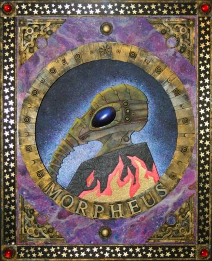

Contact

My Mind...

Liebe is perhaps the most narcissistic, sociopathic, arrogant, unpleasant, and obnoxious person I have ever dealt with in my life. Every waking moment I have spent with him has been absolute torture, a punishment that I would never put upon any other person on the planet. However, I have endured these past 8 months, all with the singular goal to release this document and permanently bring an end to him.
He has consistently harassed, manipulated, and coerced me and others in the community for his own desires across his multiple alts. Around the time that Najunald was getting pushback from DGGers for saying “n*gga” too much, Liebe told me in VC that Najunald was the “token n*gger in DGG.” I was shocked when I realized he was unironically being racist in front of me in private. Also, he would most likely be too much of a pussy to say it in public.
Not only that, Liebe showed casual homophobia and transphobia such as when he called trans chatter llunaco a "F*g" in DGG This resulted in a week ban from RTBA. When I saw that llunaco posted this interaction in a discord server, I prompted him about what happened. This was his response; he was actually considering nuking everything and burning all bridges down just because of this one interaction. This became much worse when he learned what llunaco’s previous DGG deadname was, at which Liebe stopped using the name llunaco. He said that he had an argument with llunaco before on a different account and called her one of the most sensitive, pathetic soylords to ever grace DGG.
All of this I have witnessed and unfortunately stood as a bystander for the sake that he will no longer be able to enact his twisted games upon others. These past 8 months have provided far more than enough evidence and thus, it is finally time for the killshot.